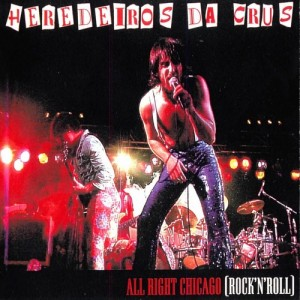

Heredeiros da crus
Heredeiros da Crus es un grupo de rock español fundado en 1992 por Antón Axeitos
(Tonhito de Poi) en
Castiñeiras (en Riveira, provincia de A Coruña). A él se unirían Antonio Novo (Tuchiño) como
guitarrista, Francisco Velo (O Jran Fran) como bajo y Javier Vazquez Maneiro (Jarfuxo) como voz.
Desde su fundación han pasado por el grupo varios baterías, siendo el último Manu Rey, después de
haber ocupado ese puesto Avelino Ares, Benito, Pepe Santamaría "Medin" (la mayor parte de la vida
del grupo) Marcos Otero o Pedro Rodriguez-Trelles.
En 1993 presentan su primer trabajo en directo, A cuadrilla de Pepa a loba, que publican en 1994 y
en el que se incluyen canciones que rápidamente alcanzan popularidad entre la juventud gallega de
los 90 como Quero josar o R7-O Jran batacaso, aunque el éxito les llegará de la mano del single Que
jallo é que se emitía en el programa infantil Xabarín Club.
Destacan como influencias musicales del grupo los grandes clásicos del rock and roll, sobre todo los
Rolling Stones, grupo de cabecera del principal creador de las canciones, Tuchiño. Si bien en cuanto
a temática y estética de grupo y letras, podrían parecerse más a AC/DC.
Cuando con Está que te cajas Heredeiros da Crus se convierten en el grupo gallego con mejor
aceptación comercial, queda sentenciado su éxito. También son el primer grupo de rock en gallego en
grabar un doble directo All Right Chicago o un DVD Chicarrón. Además sus pequeñas escapadas al
extranjero: Portugal, Nueva York, Londres ... han contado con una buena afluencia de público.
Marea
Marea es un grupo de música rock (original de Berriozar, Navarra) formado en 1997 por
Kutxi Romero.
Recogiendo diferentes influencias de la escena del rock urbano, con una apuesta musical basada en
cortes enérgicos de rock duro, adhieren letras poéticas escritas por Kutxi Romero altamente
influenciadas por el folclore y la literatura española.
El lanzamiento de su tercer álbum, Besos de perro, supuso la consolidación de la banda consiguiendo
así su primer disco de oro. El mayor éxito comercial lo alcanzó su siguiente álbum, 28.000
puñaladas, el cual alcanzó el reconocimiento de disco de platino. Desde entonces la banda ha
mantenido un ritmo de éxito constante alcanzando nuevamente el disco de oro con el resto de sus
lanzamientos Las aceras están llenas de piojos, En mi hambre mando yo y El azogue a pesar de que se
produjo un hiato previo al lanzamiento de estos dos últimos.